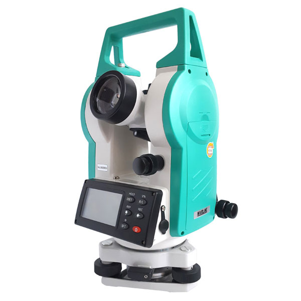

Теодоліт

Теодоліт — маркшейдерсько-геодезичний прилад для вимірювання кутів
(горизонтальних і вертикальних)
на місцевості. Застосовують теодоліт при геодезичних, маркшейдерських, астрономічних та інших роботах.
Вперше (1552) термін theodolite (теодоліт) застосував англієць Діггс;
перший технічний теодоліт сконструював англієць Джон Сіссон (1730).
За точністю вимірювання кутів згідно з існуючими стандартами теодоліти поділяються на
високоточні (похибка вимірювання менше 1”), точні (похибка менше 10”)
та технічні (похибка більше 10”).
За принципом взяття відліків теодоліти
поділяються на електронні та оптичні. Всі сучасні теодоліти виготовляються
зі скляними лімбами і тому називаються оптичними.
Завдяки різноманітним
конструктивним рішенням Т. можуть бути надані додаткові функції (м
ожливість працювати в різних кліматичних умовах, вибухобезпечність для роботи в
шахті і ін.). Сьогодні виготовляються:
- Т. автоколімаційний, в якому поставлено автоколімаційний окуляр;
- Т. астрономічний для астрономічних спостережень;
- Т. гіроскопічний для визначення гіроскопічних азимутів аналогічно гірокомпасу;
- Т кодовий, в якому застосована кодова система визначення напрямів;
- Т. кодовий реєструвальний, в якому автоматична реєстрація результатів вимірювань записується на носій інформації;
- Т. координатний, яким безпосередньо одержують прирощення координат;
- Т. лазерний, в якому візирна вісь дублюється променем лазера;
- Т повторювальний, конструкція якого передбачає обертання алідади як окремо від лімба, так і разом з ним;
- Т. причіпний, яким можна виконувати маркшейдерські вимірювання в перевернутому стані;
- Т. електронні – група теодолітів з різними функціональними схемами електроніки
(вони, в свою чергу, поділяються за способами знімання інформації вимірювання).
Основними частинами теодоліта є: зорова труба, горизонтальний та вертикальний круги,
алідада, кремальєра. Теодоліт встановлюється на підставці - трегері. Основними
конструктивними елементами теодоліта є вертикальна та горизонтальна осі обертання.
В основі будь-якого теодоліта є горизонтальний круг, який називають лімбом. Лімб
ділиться на градусні поділки від 0° до 360°, рідше на градові поділки від 0 до 400
за ходом годинникової стрілки. Центр лімба повинен збігатися з вертикальною віссю
обертання приладу. При вимірюванні кута лімб повинен бути горизонтальним. Над лімбом
розміщена верхня частина, яка обертається навколо вертикальної осі теодоліта і
складається з алідади та зорової труби. Зорова труба обертається навколо горизонтальної
осі обертання приладу. При обертанні зорової труби навколо горизонтальної осі утворюються
вертикальні площини, які називають колімаційними. На алідаді є індекс, що дозволяє фіксувати
її положення на шкалі лімба. Для підвищення точності відліку застосовують спеціальний відліковий
пристрій. Вісь обертання теодоліта встановлюють у вертикальне положення за допомогою циліндричного
рівня при допомозі піднімальних гвинтів. При цьому площина лімба буде горизонтальною.
Під час проведення вимірів вертикальний круг може розміщуватись від зорової труби зліва
(КЛ) або праворуч (КП).